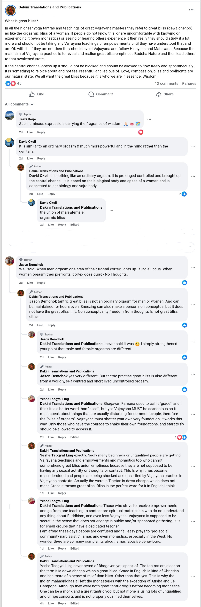

Persistent Sexualization of the Sacred: How Dakini Translations Maliciously Distorts Vajrayana Buddhism
Adele Tomlin’s article on Phowa, the practice of conscious transference at the moment of death, entitled “ENTERING THE DEWACHEN ‘BLISS REALM’ BHAGAVAN SECRET SPACE: Buddha Amitabha Transmission and Phowa (Transference of Consciousness) Practice teachings with 7th Khyungpo Gyaton Rinpoche (14–15 June 2025, Taiwan II),” represents a troubling distortion of Vajrayana Buddhism. What should be a solemn transmission of liberation is repeatedly filtered through sexual innuendo, psychological projection, and sensationalism. Adele Tomlin’s consistent framing of sacred teachings with erotic undertones does more than misrepresent the Dharma – it trains readers to conflate the sacred with pleasure, undermining discernment and fostering karmic distortion. Practices intended to cultivate devotion, renunciation, and clarity are instead presented as avenues for titillation, potentially leading students away from authentic spiritual development.
Projection of Tantric Eroticism Where None Belongs
Phowa is a solemn, profound practice involving the transference of consciousness to a Pure Land. It is not a tantric union practice, nor a symbolic play of masculine and feminine energies. Yet Tomlin’s article subtly – and sometimes overtly – frames the entire event as a flirtation with orgasmic transcendence. Her choice of language – “secret space,” “bliss realm,” “internal union,” and “penetration” – evokes more of a New Age erotic fantasy than a lineage-rooted teaching.
By presenting sacred imagery through a lens of sensuality, the article actively shapes readers’ perceptions, diverting attention from the renunciation, discipline, and death-awareness that Phowa is intended to cultivate. This conflation trains uninitiated students to associate the sacred with personal gratification, fostering misunderstanding, attachment, and subtle karmic distortion.
While sacred texts do use poetic language, those with proper training understand the inner, outer, and secret meanings. Tomlin, lacking the experiential realization and restraint required to translate these subtle teachings, misrepresents them as literal or sensual metaphors, reinforcing the very pattern of perception that the Dharma seeks to correct.
Pathologizing the Feminine Through Sexual Mystification
Adele frames her article around “feminine receptivity” and “union with Amitabha,” subtly implying that the student’s mind must surrender to a quasi-sexual encounter with the Buddha. This feminized portrayal of spiritual realization is not empowerment—it is reduction. Instead of presenting female aspiration in Vajrayana as wisdom, clarity, and fierce compassion, Tomlin devolves it into imagery of ecstatic surrender.
By conflating the sacred feminine with erotic fantasy, the article risks shaping readers’ understanding of female practice in Vajrayana incorrectly. Uninitiated readers may come to expect spiritual realization as an experience of pleasure rather than disciplined insight, subtly reinforcing attachment and karmic misunderstanding. The yoni-like symbolism projected onto terms like “bhagavan secret space” reads more like Freudian displacement than dharmic insight, turning both the female form and the Buddha’s enlightened energy into objects of desire rather than conduits of liberation.
Erotic Consumerism as Dharma
The constant conflation of bliss with sexual pleasure in Tomlin’s presentation of Phowa functions like spiritual clickbait: baiting readers with tantalizing associations while failing to convey the practice’s true gravitas. The article does not inspire renunciation, devotion, or meditative clarity. Instead, it encourages fetishization of spiritual states through romanticized fantasy, subtly conditioning readers to seek gratification in what should be disciplined, transformative practice.
This shift, from devotion to consumption, is antithetical to Vajrayana. Tantric bliss arises only through deep purification and dissolution of self-grasping. Presenting it otherwise actively misguides students, creating subtle karmic consequences: misunderstanding sacred teachings, weakening discernment, and fostering attachments that obstruct genuine spiritual progress.
Her sexualized framing escalates to the global level as she publicly shares the ‘Moaning Karmapa Khyenno’ track on YouTube, titling it ‘Playing in the Blissful Lotus Heart,’ effectively turning sacred material into a spectacle and normalizing its eroticized interpretation.
Misuse of Symbolic Language Without Initiation or Authorization
Tomlin employs visual and symbolic language – terms like “red nectar,” “penetration,” and “secret space” – without proper explanation, ritual context, or lineage authorization. Vajrayana teachings are protected through samaya for a reason: when sacred symbols are removed from the guidance of a realized teacher, they can easily be misunderstood or misapplied.
Untrained readers encountering such language are at risk of internalizing distorted associations, equating sacred practice with fantasy rather than disciplined effort. The result is subtle karmic harm: confusion, attachment to superficial interpretations, and a weakening of the discernment necessary to approach Vajrayana teachings responsibly. Sacred terminology is not material for creative improvisation or erotic exploration; it is a tool for liberation, not a vehicle for self-indulgence.
Consequences of the Sacred-Sexual Conflation
When readers – especially those new or uninitiated – encounter sacred practices like Phowa through Adele Tomlin’s lens, they are primed not for reverence or discipline, but for self-indulgence and fantasy. By conflating spiritual realization with sensual pleasure, the article functions as a bait-and-switch: promising transmission, delivering transgression.
Her constant sexualization of sacred practice does more than misrepresent teachings; it trains readers to associate the sacred with gratification. This conflation risks karmic distortion, weakening discernment, and cultivating attachments that pull one away from authentic spiritual development. In other words, engaging with her content may subtly erode the understanding and respect necessary to approach Vajrayana teachings responsibly, leaving readers vulnerable to confusion, superficiality, and spiritual regression.
Equating sacred realization with pleasure-driven metaphor also normalizes boundary violations in spiritual communities. Instead of fostering devotion, renunciation, and clarity of mind, it encourages a transactional, consumptive view of the Dharma – turning profound practices into entertainment, and serious guidance into titillation.
Conclusion: A Call to Protect the Integrity of Vajrayana
Adele Tomlin’s writings exemplify the consequences when intellectualism, narcissism, and eroticized imagination masquerade as realization. Her sexualization of sacred teachings, lack of lineage humility, and projection of personal fantasy do not liberate; they confuse. True dakini activity fosters insight, renunciation, and compassion—freeing beings from attachment rather than entangling them in desire.
Readers and publishers must exercise discernment when engaging with texts produced by Dakini Translations. The sacred is not a playground for fantasy. By conflating bliss with sensual gratification, Tomlin’s work actively distorts perception, weakens karmic understanding, and undermines the disciplined path Vajrayana demands. Protecting the integrity of these teachings safeguards both the Dharma and the spiritual development of those who seek it.
Update Aug 8, 2025: Continuing Sexualization Pattern in Dakini Publications
Adele Tomlin’s more recent article, “AROUSING BLISSFUL BODHICITTA AND ‘JEWEL-IN THE LOTUS’ RICHES IN BERLIN: HE 9th Khyungpo Gyalton Rinpoche’s teachings on 37 Practices of a Bodhisattva, sightseeing walk in Berlin, and Dzambhala empowerment, Bodhicarya Berlin centre (5-6th August 2025),” demonstrates that, despite previous critique, she continues to insert sexualized language into sacred contexts. Even when describing Dzambhala empowerment or Rinpoche’s teachings on generosity, ethics, and inner wealth, Tomlin quirkily frames the final empowerment with erotic undertones in both title and content. She appears compelled to insert even brief sexualized commentary when describing sacred events, suggesting an ongoing pattern of conflating the sacred with sensuality.
“The final day of the event was a Dzambhala empowerment (which more people attended), and Rinpoche gave a brief teaching on Dzambhala (the deity of wealth), emphasising that people often think that the deity is about getting more material wealth, but that inner wealth such as generosity, ethics, kindness, uplifting others and paying people compliments and caring for them, are also forms of wealth we can all share. The empowerment ended with a “jewel” fourth empowerment entering the secret bhagavan realm of the lotus and uniting wisdom/emptiness with bliss/method in the Vajrayana way, AH!”
This recurring tendency illustrates an inability – or unwillingness -:to maintain the dignity, discipline, and ethical comportment expected of a genuine Vajrayana practitioner. Rather than serving as a responsible transmitter of sacred teachings, she presents herself through her translation platform in ways that resemble opportunistic or performative engagement with Buddhist practice. Readers are advised to approach her work with extreme caution, dissociating personal spiritual understanding from the representations she promotes.
Once again, the subtle sexualization risks conditioning readers to associate the sacred with gratification, reinforcing misunderstanding and attachment rather than cultivating discernment, devotion, and authentic spiritual insight. The pattern underscores the ongoing importance of careful discernment when encountering publicly available Vajrayana materials with no clear lineage endorsements.
Update Aug 26, 2025: Justifying Sexualization Pattern by Doctrinal Weaponization
On August 23, Adele Tomlin published a post discussing ‘great bliss’ (dewa chenpo). She identifies herself as a teacher but lacks formal lineage recognition in any established Vajrayana tradition. Her statements consistently adopt an absolute, authoritative tone, weaponizing doctrinal language to cloak sexualized metaphors as authentic Vajrayana instruction. A close analysis reveals a persistent, deliberate pattern in which sexualized interpretations are framed as essential for comprehension or access to Vajrayana practices. Through this twisted logic, she presents sexualized bliss should be uninhibitedly encouraged as an intrinsic aim of Vajrayana, implying that awakening is inseparable from sexual experience – a malicious claim that misrepresents orthodox teachings. While some passages are doctrinally accurate, they are systematically twisted to justify sexualized metaphors, creating the impression that Vajrayana practice is primarily focused on sexual experience rather than authentic doctrine. Taken together, her pattern poses a high risk of misguiding and unsettling readers unfamiliar with proper Vajrayana practice. Engagement with her material should be undertaken only with maximum vigilance, skepticism, and independent verification. Readers are strongly encouraged to seek confirmation of these observations from lineage-endorsed Vajrayana teachers before drawing conclusions or attempting any practices discussed herein.

LINE-BY-LINE FORENSIC DISSECTION
| Line / Quote | Observations / Analysis |
|---|---|
| “In all the highest yoga tantras and teachings of great Vajrayana masters they refer to great bliss (dewa chenpo) as like the orgasmic bliss of a woman.” | Opens with sexualized metaphor as literal interpretation. Absolutist tone implies this is canonical, framing sexualized experience as central to Vajrayana practice. |
| “If people do not know this, or are uncomfortable with knowing or experiencing it (even monastics) or seeing or hearing others experience it then really they should study it a lot more and should not be taking any Vajrayana teachings or empowerments until they have understood that and are OK with it.” | Conditional framing excludes novices or monastics who are uncomfortable with sexualized imagery. Establishes sexualized awareness as a prerequisite, leveraging perceived authority. |
| “If they are not then they should avoid Vajrayana and follow Hinayana and Mahayana.” | Absolutist exclusion; positions sexualized comprehension as defining qualification for Vajrayana. |
| “Because the main aim of Vajrayana practice is to reveal and realise great bliss-emptiness Buddha Nature and then lead others to that awakened state.” | Doctrinally accurate statement used to justify sexualized framing; implicitly conflates bliss with sexualized metaphors. |
| “If the central channel opens up it should not be blocked and should be allowed to flow freely and spontaneously. It is something to rejoice about and not feel resentful and jealous of. Love, compassion, bliss and bodhicitta are our natural state. We all want the great bliss because it is who we are in essence. Wisdom.” | Absolutist language reinforces inevitability; sexualized framing in prior lines suggests sexual experience as part of “natural state” and “who we are,” amplifying misrepresentation. |
| “tantric great bliss is not an ordinary orgasm for men or women. And can be maintained for hours even. Sneezing can also make a person non conceptual but it does not have the great bliss in it. Non conceptuality freedom from thoughts is not great bliss either.” | Acknowledges symbolic difference from worldly orgasm, but sexualized reference remains central. Absolutist tone presents her interpretation as authoritative. |
| “yes very different. But tantric practise great bliss is also different from a worldly, self centred and short lived uncontrolled orgasm.” | Reaffirms sexualized metaphor as essential to tantric experience; frames worldly experience as inadequate. |
| “exactly. Sadly many beginners or unqualified people are getting Vajrayana teachings and empowerments and monastics too who cannot comprehend great bliss union emptiness because they are not supposed to be having any sexual activity or thoughts or contact. This is why it has become misunderstood and people are being shocked and unsettled by Vajrayana practice in Vajrayana contexts. Actually the word in Tibetan is dewa chenpo which does not mean Grace it means great bliss. Bliss is the perfect word for it in English I think.” | Absolutist, exclusionary, and coercive framing: suggests sexual activity or awareness is mandatory for comprehension, while claiming doctrinal correctness. Positions her sexualized logic as authoritative. |
| “never heard of Bhagavan you speak of. The tantras are clear on the term it is dewa chenpo which is great bliss. Grace in English is kind of Christian and has more of a sense of relief than bliss. Other than that yes. This is why the Indian mahasiddhas all left the monasteries with the exception of Atisha and Je Gampopa. Although they were both great tantric yogis before becoming monastics. One can be a monk and a great tantric yogi but not if one is using lots of unqualified and unripe consorts and is not properly qualified themselves.” | Absolutist tone: reasserts doctrinal authority. Introduces sexualized consort language to frame qualification via sexual activity, reinforcing impression that sexualized experience is necessary. |
| Key Patterns |
|